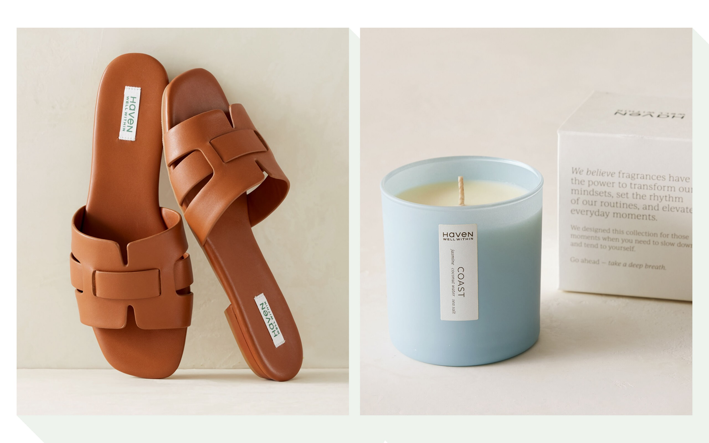
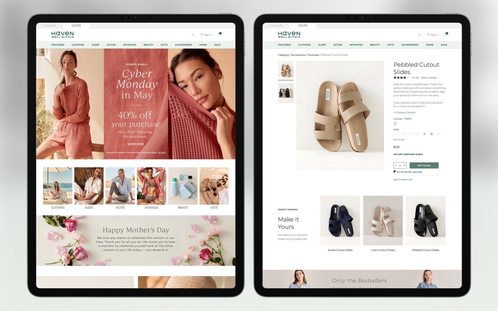
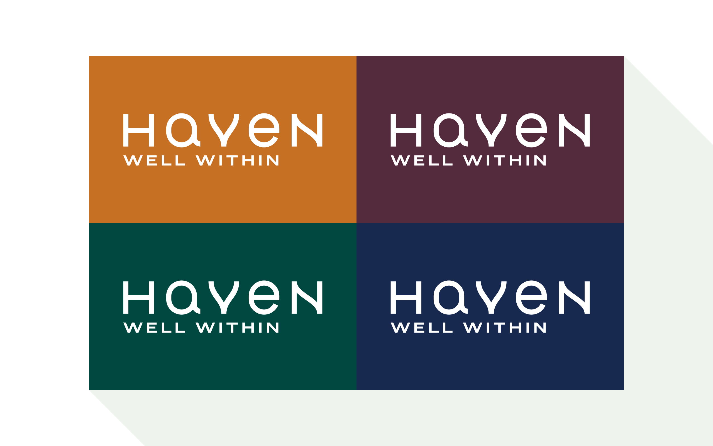
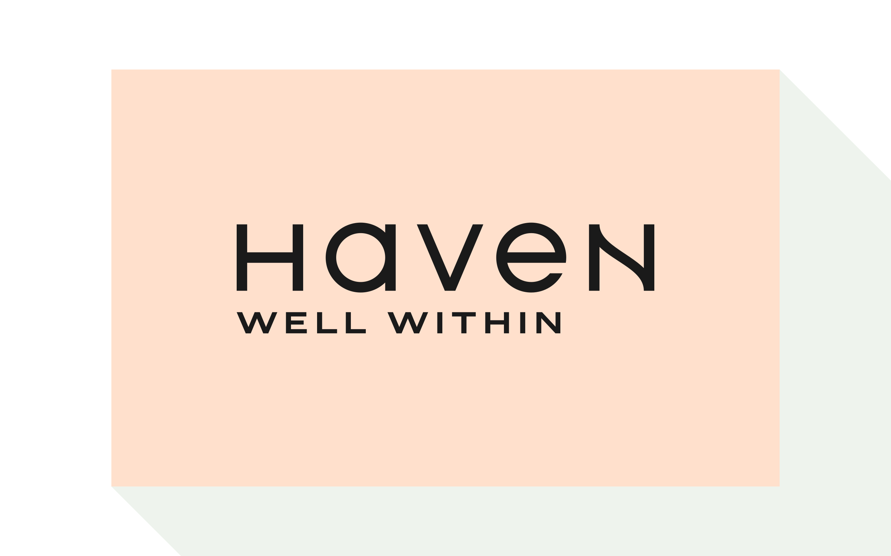
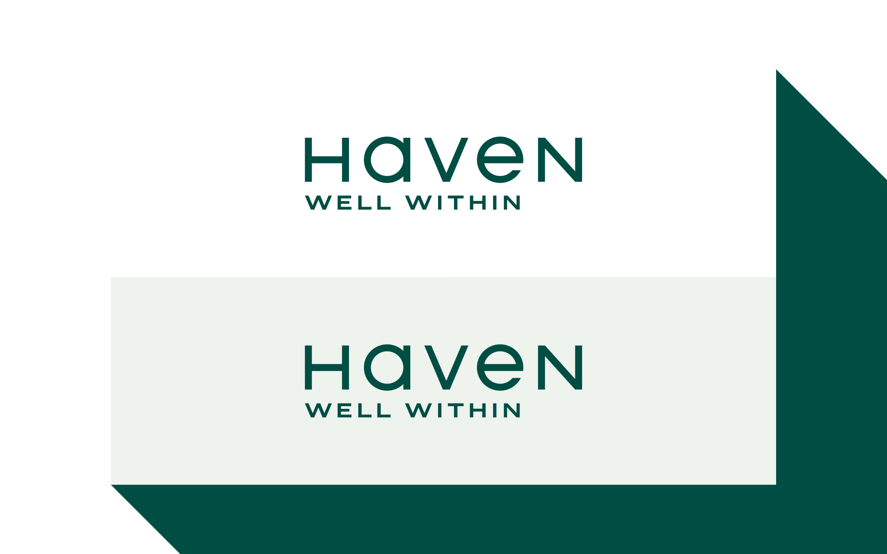

Women's Fashion and Homeware Rebrand
The client had a clear vision for their brand, so the creative process was relatively quick with minor revisions. Early logotypes combined flowing lines and sans serif lettering. We paired it with a warm earth-tone color palette to emphasize the mix of fashion and nature.
Further iterations of the logotype removed the flowing lines and eventually landed on a mixture of upper and lower case geometric lettering. We simplified the earth-tone color palette, resulting in a combination of tea and forest greens.
- Details
- Client: The Talbots, Inc.
- Studio: Graj+Gustavsen


The logo as seen on different products

The logo as seen on the client's website

First pass logo design with different color pairings

Second pass with a softer color pairing

Final logo and color palette